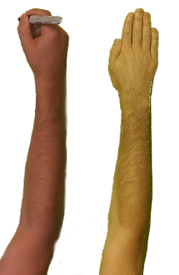

<canvas id="canvas" width="700" height="500" style="border: 1px solid gray;"></canvas>

<script>
	var canvas = document.getElementById('canvas');
	var context = canvas.getContext('2d');
	var image = new Image();
	image.src = 'HandPoint.png';
	image.onload = function() {
		/*
		context.drawImage(image, 
				0, 0, 146, 449,
				1297.6-800, 311.6, 178.8, 550);
		*/
		context.drawImage(image, 
				146, 0, 146, 449,
				1297.6-800, 311.6, 178.8, 550);
	};
</script>
